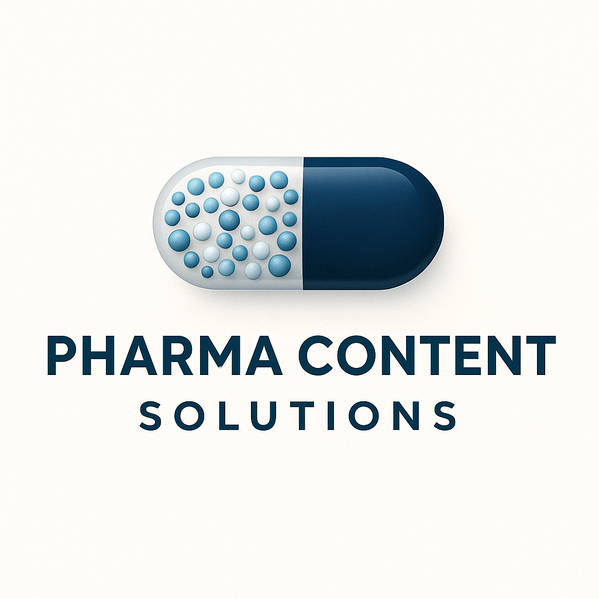

Boost Your Global Visibility
Your website deserves more than just being online

What We Do
Commitment to Innovation
Pharma Content Solutions helps pharmaceutical and biotechnology companies amplify their digital presence with high-quality, SEO-driven content tailored to your industry.
Whether you specialize in APIs, formulations, biologics, excipients, intermediates, or global contract services such as CROs, CDMOs or CMOs, our content solutions ensure your brand stands out in an increasingly competitive and regulated market.
We drive traffic, capture leads, and expand your reach worldwide in the pharmaceutical industry.
Why Pharma Content Solutions?

From creating to rebranding to ranking—we handle your website, so you can handle your business.
At Pharma Content Solutions, we specialize in delivering high-quality, SEO-driven content tailored exclusively for the pharmaceutical and biotechnology industries. Our mission is to help pharma and biotech companies strengthen their digital presence, enhance global visibility, and secure top search engine rankings for their key capabilities.
We understand the highly regulated and competitive nature of the pharmaceutical sector whether it involves APIs, formulations, biologics, excipients, or contract services such as CDMOs, CMOs, or CROs. Our team of skilled content strategists, SEO experts, and industry professionals is dedicated to creating accurate, compliant and impactful SEO content that resonates with your target audience while meeting industry standards.
At Pharma Content Solutions, we don't just create content—we craft strategies that position your business as a trusted thought leader in the pharma and biotech space. With our expertise, your brand can achieve measurable growth, increased visibility, and stronger connections with your audience.
Services
SEO-Optimized Articles & Blogs
Create a stronger digital presence with SEO-optimized pharmaceutical and biotech articles and blogs. We develop technically accurate, search-focused content around APIs, formulations, excipients, biologics, CDMO, CMO, CRO, nutraceuticals, cosmetics and other industry-specific topics to help businesses attract relevant audiences and improve their online visibility. Our content is designed to strengthen brand authority, improve search rankings, and generate greater visibility among relevant pharmaceutical and biotech professionals.
Website Content Strategy & Creation
Build a website that clearly communicates your expertise and capabilities. Pharma Content Solutions creates SEO-driven website content for pharmaceutical and biotechnology companies, including About Us, products, services, capabilities, technologies, applications, FAQs, and other key page, helping your business target relevant keywords and strengthen its global search visibility. Our content is structured to improve website discoverability, establish your brand as a credible industry resource, and connect with relevant pharmaceutical and biotech audiences.
Corporate & Product Video Creation
Bring your company's expertise and offerings to life with professional short-form videos designed for websites, LinkedIn, social media, and digital marketing. We create corporate introduction, product-specific, and service-focused videos that communicate your capabilities, products, technologies, and services in a clear and engaging format, helping pharmaceutical, biotech, API manufacturers, formulation companies, excipient manufacturers, CDMOs, CMOs, CROs, nutraceutical, and other life-science businesses strengthen their digital presence and reach a wider global audience.
Competitor Analysis
Understand how your pharmaceutical or biotech business compares online with relevant competitors. We evaluate content, keyword targeting, website structure, technical visibility, and key capability pages to identify opportunities for pharmaceutical companies, API manufacturers, FDF manufacturers, CDMOs, CMOs, CROs, and other life-science businesses to improve their online presence.
Our digital competitor analysis examines competitor website content, SEO presence, keyword opportunities, and content strategy to identify areas where your business can strengthen its digital positioning and improve visibility for key products, services, and capabilities.